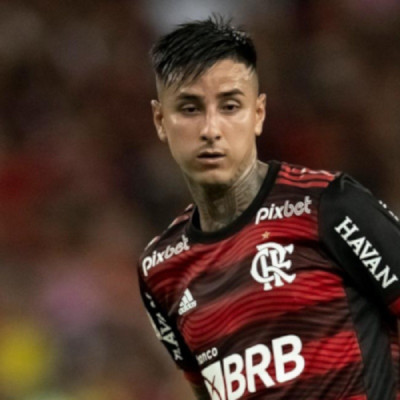

Pulgar sofre fratura no pé e está fora de Flamengo x Del Valle; Gerson volta.
Recuperado, Pedro também reforça a equipe na Recopa; veja os relacionados
O Flamengo divulgou na manhã desta terça-feira os relacionados para a partida contra o Independiente del Valle sem Erick Pulgar. O volante sofreu fratura na base do quinto metatarso do pé direito e foi cortado da partida de volta da Recopa, às 21h30 (de Brasília), no Maracanã.
A lesão aconteceu no clássico do último sábado, na vitória sobre o Botafogo, pelo Campeonato Carioca. Com a ausência, o Flamengo perde uma opção de marcação para o meio de campo. No mesmo setor, porém, há uma boa notícia: Gerson está de volta após tratar as dores no tornozelo esquerdo.

Gerson e Pedro voltam
Como informou o ge, o volante deve iniciar a partida no banco, com Everton Ribeiro entre os titulares. O camisa 7 formará o meio de campo à frente de Thiago Maia e Vidal. No ataque, Pedro volta à parceria com Gabigol. O camisa 9 foi dúvida nos últimos dias devido a dores musculares.
O provável Flamengo tem: Santos; Varela, Fabrício Bruno, David Luiz e Ayrton Lucas; Thiago Maia, Vidal, Everton Ribeiro e Arrascaeta; Gabigol e Pedro.
O clube divulgou lista com 25 atletas, entre eles alguns garotos da base, como fez na partida de ida. Vítor Pereira terá que cortar dois nomes da relação final que disputará a decisão.
Confira os nomes
- Goleiros: Santos, Matheus Cunha e Hugo;
- Zagueiros: David Luiz, Fabrício Bruno, Pablo, Rodrigo Caio e Cleiton;
- Laterais: Varela, Matheuzinho e Ayrton Lucas;
- Meio-campistas: Thiago Maia, Vidal, Gerson, Everton Ribeiro, Arrascaeta, Matheus França, Igor Jesus, Lorran;
- Atacantes: Pedro, Gabigol, Everton Cebolinha, Marinho, Matheus Gonçalves, Mateusão.
Flamengo e Independiente del Valle disputam nesta noite o título da Recopa. Os equatorianos saíram na frente no jogo de ida com uma vitória por 1 a 0 e jogam pelo empate. O Fla precisa vencer por dois ou mais gols para levantar a taça após os 90 minutos. Uma vitória simples rubro-negra leva a disputa para prorrogação e, mantida a igualdade, para disputa de pênaltis.